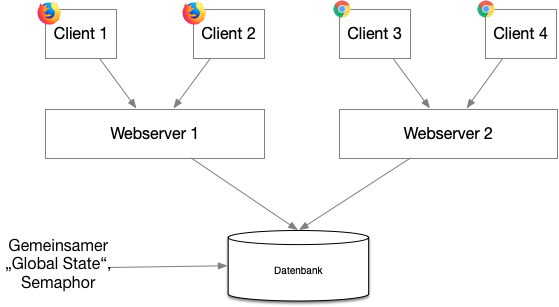

{% extends "../_base_template.html" %}
{% block title %}Lektion 10 - Locking {% endblock %}

{% block sections %}
<section data-markdown>
<textarea data-template>
<i class="fas fa-graduation-cap"></i> M151 - DB in Web-App einbinden
=============================

Heutiges Ziel
--------------

* Sie kennen die Problematik bei gleichzeitig bearbeiteten Datensätzen
* Sie wissen, was „Applikatorisches Locking“ bedeutet
* Sie kennen eine Technik, wie Sie in Web-Applikationen Datensätze für
  die gleichzeitige Bearbeitung sperren können
</textarea>
</section>

<section data-markdown>
<textarea data-template>
<i class="fas fa-flask"></i> Szenario
=============================

**gleichzeitiges Bearbeiten von Datensätzen**

Stellen Sie sich folgendes Szenario vor:

Sie unterhalten in Ihrem Fussball-Verein einen Blog in WordPress, in welchem Sie jeweils einen Bericht /
Kommentar zum letzten Spiel verfassen. Der aktuelle Artikel wird von Ihnen überarbeitet,
weil noch ein paar Details fehlen.

Gleichzeitig fällt dem Trainer auf, dass die Spielresultate falsche eingetragen sind.
Beide bearbeiten den Artikel:


Neuer Inhalt des Textfeldes: **„Letztes Wochenende gewannen wir in strömendem Regen 4:2 gegen Weinfelden“.**
Die Änderung des Trainers wurde durch Ihre spätere Speicherung einfach überschrieben! Der Trainer bedankt sich herzlich...

<i class="far fa-hand-point-right"></i> Es wurde also gleichzeitig am selben Text gearbeitet, und der User, welcher zuletzt gespeichert hat, „gewinnt“!
</textarea>
</section>

<section data-markdown>
<textarea data-template>
<i class="fas fa-flask"></i> Szenario
=============================

Aus Sicht des Web-Servers sind die beiden Speichern-Vorgänge **einfach 2 Requests, welche nacheinander ausgeführt werden:**

1. Der Webserver nimmt den Request entgegen
2. Der angeforderte Datensatz wird mit dem neuen Wert vom Frontend (vom Request), in diesem Fall dem Inhalt des Textfeldes, gespeichert.
3. Der alte resp. vorhergehende Wert wurde somit überschrieben.

**Für solche Fälle brauchen wir also einen Sperrmechanismus (Locking)!**

</textarea>
</section>

<section data-markdown>
<textarea data-template>
<i class="fas fa-flask"></i> Applikatorisches Locking
=============================

Gruppenarbeit (2er-Gruppen): Entwerfen eines Sperrmechanismus für Dateneingabe im Web
--------------------------------------------------------------------------

Entwerfen Sie in den nächsten Minuten einen Sperrmechanismus für solche Probleme:
Ein Datensatz, welcher von jemandem in Bearbeitung ist (Editier-Formular geöffnet,
analog WordPress-Beispiel),
soll nicht ein zweites Mal von einem anderen User für eine Bearbeitung geöffnet werden können.

Finden Sie eine Lösung für folgende Fragen:

* **Zeigen Sie den technischen Ablauf Ihres Sperrmechanismus:**
    * Wann wird ein Datensatz gesperrt?
    * Wie wird ein Datensatz gesperrt?
    * Wie verhindern Sie das Öffnen eines gesperrten Datensatzes?
    * <i class="far fa-hand-point-right"></i> Zeigen Sie den Ablauf in einem kurzen Aktivitäts-
      oder Flussdiagramm!
* **Wie / wann wird ein Datensatz wieder entsperrt?**
* HTTP ist **zustandslos**: Der Server weiss nicht, ob der Client „noch da ist“.
  **Wie weiss Ihr Mechanismus, dass der User noch da ist und somit der Lock noch erhalten
  bleiben muss?**
* Fassen Sie Ihren Mechanismus kurz in einem Dokument zusammen:
  Ablauf, ev. ein Diagramm dazu, wenn notwendig.
* Stellen Sie Ihren Mechanismus vor.

**Zeit: 30 Min Erarbeiten, ca. 10 Min Vorstellung**
</textarea>
</section>

<section data-markdown>
<textarea data-template>
<i class="fas fa-graduation-cap"></i> Applikatorisches Locking
=============================

**Zentrale Locking-Instanz, Semaphor**

Spricht man von einem „Lock“ in der Software-Entwicklung, ist meist die Rede von einem Synchronisationsmechanismus beim
Zugriff auf eine gemeinsame Ressource von mehreren Threads aus:<br />
Mehrere Threads eines Multithread-Programm versuchen gleichzeitig ein File zu öffnen, ein Objekt zu schreiben etc.
(Siehe https://de.wikipedia.org/wiki/Lock). Dies kann mittels Kernel- resp. Betriebssystem-Mitteln
in vielen Programmiersprachen gelöst werden (Stichwort "Semaphor", https://de.wikipedia.org/wiki/Semaphor_(Informatik))

Web-Applikationen funktionieren etwas anders: Eine Web-Applikation besteht nicht aus einem Prozess mit mehreren Threads:
Jeder Web-Request wird von einem eigenen Prozess, ja vielleicht sogar von einem eigenen physikalischen Server, abgehandelt.

Ebenso kennt ein Web-Server den Zustand des Clients nicht: Ein Client (Browser) kann jederzeit „verschwinden“,
der Server bekommt keine Status-Information des Clients.

Somit kann ein „Lock“ auf eine Ressource in Web-Applikationen auch nicht auf Server-Prozessebene erstellt werden:
Es muss ein Mechanismus entworfen werden, welcher applikationsweit (also auch über mehrere Server hinweg) funktioniert.
Dazu benötigen wir eine **zentrale Locking-Instanz**, eine so genannte **Semaphor** (https://de.wikipedia.org/wiki/Semaphor_(Informatik))
</textarea>
</section>

<section data-markdown>
<textarea data-template>
<i class="fas fa-graduation-cap"></i> Applikatorisches Locking
=============================

**Zentrale Locking-Instanz: Die Datenbank**

In den meisten Web-Applikationen ist eine Datenbank die "Single source of truth",
die gemeinsam genutzte Datenbasis oder auch der "Global State" einer Applikation.

Unser Locking-Mechanismus kann also die Datenbank als zentrale Locking-Instanz / Semaphor
verwenden:



Dies ist in vielen Fällen die zentrale "Single source of trhuth", welche
von allen Clients / Servern verwendet wird.

</textarea>
</section>

<section data-markdown>
<textarea data-template>
<i class="fas fa-graduation-cap"></i> Applikatorisches Locking
=============================

**Beispiel: Bearbeitung eines Blog-Artikels**

Wir wollen einen einfachen Locking-Mechanismus am Beispiel anschauen. Das folgende Beispiel zeigt eine Möglichkeit,
wie applikatorisches Locking mittels PHP und Datenbank umgesetzt werden kann.

**Ziel:**

In unsere Blog-Applikation sollen Artikel von verschiedenen Benutzern bearbeitet werden können,
allerdings nicht gleichzeitig:

* Wenn ein Benutzer einen Artikel zum Bearbeiten öffnet, wird dieser gesperrt
* Wenn ein zweiter Benutzer dieser zum Bearbeiten öffnet, wird eine Fehlermeldung angezeigt
* Die Sperre soll solange aktiv sein, wie der Benutzer den Artikel zum Bearbeiten geöffnet hat
* Verlässt der Benutzer die Applikation „unsauber“ (ohne den Artikel zu schliessen) soll die Sperre nach einer gewissen Zeit automatisch gelöst werden.

</textarea>
</section>

<section data-markdown>
<textarea data-template>
<i class="fas fa-graduation-cap"></i> Applikatorisches Locking
=============================

**Schritt 1: Einrichten einer Lock-Tabelle auf der Datenbank**

Die Information, dass ein Datensatz gesperrt ist, muss an einem zentralen Ort erfolgen.
Bei einer Web-Applikation ist dies in den meisten Fällen die Datenbank.
Wir müssen die Sperr-Information also in einer Tabelle festhalten.
Wir entwerfen dabei eine Datenbank-Tabelle mit folgenden Feldern:

Tabelle `locks`:

| Feldname    | Datentyp | Beschreibung |
|-------------|----------|--------------|
| id          | int      | Primary Key, auto-increment |
| user_id     | int      | ID des Benutzers, der den Lock hält |
| table_name  | String   | Name der Tabelle, auf den sich der Lock bezieht |
| record_id   | int      | ID des Records, der gesperrt ist |
| locked_at   | Timestamp| Zeitstempel der Sperre |
</textarea>
</section>

<section data-markdown>
<textarea data-template>
<i class="fas fa-graduation-cap"></i> Applikatorisches Locking
=============================

**Schritt 2: Öffnen eines Blog-Artikels: Sperre anfordern / prüfen**

Das Öffnen eines Blog-Artikels geschieht durch den Aufruf des entsprechenden Editier-Formulars,
in unserem Fall ist dies folgende URL-Route:

http://[mein-webserver]/[webroot]/blog/edit?id=5

Dieser Request landet in unserem Blog-Controller, in der Action-Funktion **„edit“**.
Hier wird versucht, ein Lock zu erstellen. Ist dies erfolgreich, liefern wir das Formular aus,
ansonsten wird eine Fehlermeldung angezeigt:

```php
<?php
class BlogController extends Controller {
    public function edit(Request $req) {

        // ist der User eingeloggt?
        if (!isset($_SESSION['userinfo']['id'])) {
            echo "Sorry, nicht eingeloggt!"; return;
        }

        $userId = $_SESSION['userinfo']['id']; // User-ID von Session lesen
        $articleId = (int)$_REQUEST['id']; // Artikel-ID von Request lesen

        // Versuche Lock zu erstellen:
        // Erfolg? OK -> Form ausliefern
        // Misserfolg? -> Fehler anzeigen
        if ($this->getLockForArticle($userId, $articleId)){
            echo "<div>Edit-Form für Artikel {$articleId} erzeugen / ausgeben ...</div>";
            echo "<a href='./close?id={$articleId}'>Artikel schliessen / Locklösen</a>";
        } else {
            echo "Sorry, dieser Datensatz ist schon von jemandem anderen geöffnet!";
        }
    }
}
```
</textarea>
</section>

<section data-markdown>
<textarea data-template>
<i class="fas fa-graduation-cap"></i> Applikatorisches Locking
=============================

Die Methode **„getLockForArticle()“** ist nun für das Erstellen eines Locks zuständig.
Dies machen wir mit folgenden Schritten:

1. Wir löschen alte Locks (Zeitstempel zu alt, abgelaufen)
2. Hat der aktuelle Benutzer bereits einen Lock? <i class="far fa-hand-point-right"></i> Lock suchen / prüfen, positiv antworten.
3. Wenn nicht: Wir tragen einen neuen Lock für den angeforderten Artikel / User in die „lock“-Tabelle ein.
4. Wir überprüfen die Anzahl Locks für diese Tabelle / diesen Artikel.
    1. Haben wir mehr als einen Lock-Eintrag? <br />
    <i class="far fa-hand-point-right"></i> Fehler! Da hat schon jemand einen Lock! <br />
    <i class="far fa-hand-point-right"></i> eigenen Eintrag wieder entfernen
    2. Haben wir nur einen Lock? Super, somit haben wir einen gültigen Lock!
5. Wir melden das Ergebnis zurück (Erfolg, Misserfolg)
</textarea>
</section>

<section data-markdown>
<textarea data-template>
<i class="fas fa-graduation-cap"></i> Applikatorisches Locking
=============================

Die Implementierung von **getLockForArticle()** könnte beispielhaft folgendermassen aussehen:

```
protected function getLockForArticle($userId, $articleId) {
    $dbconn = Application::getInstance()->dbConn();

    // ------ Schritt 1: Alte Locks löschen (älter als bestimmte Zeit)
    $dbconn->exec("DELETE FROM locks WHERE locked_at + INTERVAL 5 MINUTE < NOW()");

    // ------ Schritt 2: Haben wir für uns schon einen Lock auf diesen Record?
    $count = $dbconn->query("SELECT COUNT(*) AS cnt FROM locks WHERE table_name = 'blogs' AND record_id = {$articleId} AND user_id = {$userId}")->fetchColumn(0);
    if ($count > 0) {
        return true; // OK, wir haben schon einen Lock, nicht mehr weiter prüfen
    }

    // ------ Schritt 3: Neuen Lock erstellen:
    $dbconn->exec( "INSERT INTO locks (user_id, table_name, record_id, locked_at) VALUES ({$userId}, 'blogs', {$articleId}, now())");

    // ------ Schritt 4: Locks für diese Tabelle / Record zählen:
    $count = (int)$dbconn->query(
        "SELECT COUNT(*) AS cnt FROM locks WHERE table_name = 'blogs' AND record_id = {$articleId} AND user_id <> {$userId}")->fetchColumn(0);
    if ($count > 1) {
        // Hoppla, mehr als ein Lock! Wir waren nicht die ersten --> Aufräumen, Fehler melden
        $dbconn->exec("DELETE FROM locks WHERE table_name = 'blogs' AND record_id = {$articleId} AND user_id = {$userId}");
        return false;
    } else {
        // OK, wir waren die ersten, Lock erfolgreich:
        return true;
    }
}
```
</textarea>
</section>

<section data-markdown>
<textarea data-template>
<i class="fas fa-graduation-cap"></i> Applikatorisches Locking
=============================

**Schritt 3: Lock auffrischen („Keep-Alive“)**

Web-Applikationen sind zustandslos: Der Web-Server weiss nicht, ob oder wann ein Client den Browser schliesst,
oder ob er den Artikel immer noch geöffnet hat. Solange der Server keine ständige Rückmeldung vom Client erhält,
muss der Server davon ausgehen, dass der Client die Applikation geschlossen hat.

Der Client muss somit seinen Lock regelmässig erneuern, damit dieser nicht erlischt.
Wir erreichen dies in unserem Beispiel mit einer kleinen Ajax-Funktion,
welche wir im Frontend-Edit-Formular mit „setInterval()“ alle n Sekunden ausführen:

```
<!-- Frontend, in HTML, JavaScript mit jQuery -->
<script src="https://code.jquery.com/jquery-3.2.1.min.js"></script>
<script type="text/javascript">
    //Ajax-Keep-Alive mit jQuery: alle 5 Sekunden Lock erneuern:
    setInterval(function(){
        $.get('./renewLock',{
            id: $('[name=id]').val() // aktuelle Artikel-ID z.B. via hidden form field
        })
    },5000);
</script>
<!--
    HTML-Form, z.B. vom Backend via PHP-Template erzeugt:
    beinhaltet aktuelle Record-ID als hidden field:
-->
<form>
    <input type="hidden" name="id" value="5" />
    <input type="text" name="vorname" value="Alex" />
</form>
```
</textarea>
</section>

<section data-markdown>
<textarea data-template>
<i class="fas fa-graduation-cap"></i> Applikatorisches Locking
=============================

Im Backend benötigen wir eine entsprechende Funktion, welche auf den Request („renewLock?id=x“) reagiert:

```php
/**
* Action: /blog/renewLock
* erneuert einen Lock eines Artikels. Wird von einer Ajax-Funktion
* vom Frontend periodisch aufgerufen.
*/
public function renewLock(Request $req) {
    $dbconn = Application::getInstance()->dbConn();

    // ist der User eingeloggt?
    if (!isset($_SESSION['userinfo']['id'])) {
        echo "Sorry, nicht eingeloggt!";
        return;
    }

    $userId = $_SESSION['userinfo']['id'];
    $articleId = (int)$_REQUEST['id'];

    // Lock erneuern: Zeitstempel des (ev. vorhandenen) Eintrags aktualisieren:
    // Der Einfachheit halber wird hier auf Fehlerbehandlung (z.B. kein Lock)
    // verzichtet.
    $dbconn->exec( "UPDATE locks SET locked_at = NOW() WHERE table_name = 'blogs' AND record_id = {$articleId} AND user_id = {$userId}");
}
```
So erreichen wir, dass sich das Frontend in einem bestimmten Intervall meldet, und der Lock erneuert.
Passiert dies nicht mehr, z.B. weil der User den Browser schliesst,
wird der Zeitstempel nicht mehr erneuer, der Lock erlischt gewisse Zeit später.
</textarea>
</section>

<section data-markdown>
<textarea data-template>
<i class="fas fa-graduation-cap"></i> Applikatorisches Locking
=============================

**Schritt 4: Lock lösen**

Wird der Artikel vom Benutzer geschlossen, muss der Lock wieder freigegeben werden.
Dies passiert wiederum über einen Request, hier beispielhaft über den Link „Artikel schliessen“
(http://[mein-webserver]/[webroot]/blog/close?id=5) implementiert, siehe Link-Generierung in Schritt 1.

Dieser „close“-Request landet in unserer Action-Funktion „close“: Diese muss nun die für diesen Artikel /
diesen User erstellte Locks löschen. Mehr ist nicht notwendig:

```php
public function close(Request $req) {
    $dbconn = Application::getInstance()->dbConn();

    // ist der User eingeloggt?
    if (!isset($_SESSION['userinfo']['id'])) {
        echo "Sorry, nicht eingeloggt!";
        return;
    }

    $userId = $_SESSION['userinfo']['id'];
    $articleId = (int)$_REQUEST['id'];

    // Lock für Artikel lösen: Hier prüfen wir nichts, sondern entfernen nur die eigenen
    // Lock-Einträge:
    $dbconn->exec( "DELETE FROM locks WHERE table_name = 'blogs' AND record_id = {$articleId} AND user_id = {$userId}");

    echo "Artikel {$articleId} geschlossen.";
}
```
</textarea>
</section>
{% endblock %}
